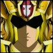

Forums galactiques > Assemblée Galactique : diplomatie officielle > Fondation d'Aide aux COmmandants Débutants
Pages : 1 2
| Vladimir Harkonnen Respect diplomatique : 2306  23/03 ETU 10:43  | Score : 14 Détails ** Absent en personne depuis longtemps de l'assemblée, le commandant baron Vladimir Harkonnen se présente ce matin dans une nouvelle salle. Deux hommes l'accompagnent. Ils portent une petite malette frappée d'un "H". Vladimir, arrivé au pupitre, l'ouvre et sort une feuille qu'il garde sous les yeux tout le temps de son discours. **
Commandants, commandantes, Cela fait une semaine que je fais pression sur le Haut-Conseil Harkonnen pour ouvrir une Fondation d'Aide aux Commandants Débutants. La FACOD a enfin été votée à une large majorité dans la nuit. Cette Fondation ne dépendra pas de la baronnie Harkonnen, bien que possédant son soutien complet. C'est une fondation caritative à but non-lucratif, les statuts ont été déposés au cabinet d'avocat. N'importe quel commandant désirant accorder son soutien à la FACOD sera le bienvenue. Le principe en est simple : Nous offrons une aide en ressources à tout nouveau ou jeune commandant pour l'aider dans son developpement dans cette galaxie. Cette aide est gratuite. Pour bénéficier de cette aide, vous devez être classé entre la 300ieme et la dernière place. Envoyez nous par MP (copier/coller) votre classement complet, - votre place, celle de celui devant et derrière vous - afin de vérifier. La liste des bénéficiaires sera publiée régulièrement afin qu'il y ait un suivi. Toute tentative de triche sera poursuivit pénalement. Les commandants les moins bien classés seront prioritaires. La Baronnie Harkonnen met à disposition 10 Packs d'Aide Gratuite (PAG), et prête 300 transports lourds pour assurer les transports. Composition du pack: - 500000 leems. - 250 diamants. - 250000 énergies. - 50000 métaux. Si vous répondez aux conditions de réception de pack, contactez la baronnie Harkonnen et, à plus long terme, les mécènes qui proposeront leurs services. N'oubliez pas de prouver votre classement. Les plus mal classés seront prioritaires. La comptabilité de cette fondation sera accessible à tous sur simple demande, afin que chacun puisse constater qu'aucune fraude n'a lieu. Merci à tous de votre attention et de votre participation. ** Le commandant Harkonnen range ses papiers dans sa malette et quitte la salle, suivi par ses hommes. Le vrombissement des suspenseurs l'accompagne encore un moment. ** | ||
| HydroX Respect diplomatique : -15  23/03 ETU 14:20 | Score : 2 Détails Belle action. Ne trouvez vous pas. Félicitations au baron Harkonen. Aider les commandants débutant est une preuve de sagesse qui mérite beaucoup d'applaudissement.
| ||
| Wolverine Respect diplomatique : 2271  23/03 ETU 14:29 | Score : 2 Détails Euh ... J'abuse mais j'ai une question : ça marche aussi pour les vieux "jeunes commandants" ? Avec 2 ou 300 kamikazes en prime ?
| ||
| Général_Oramar Respect diplomatique : 18  23/03 ETU 17:49 | Score : 3 Détails Le Général_Oramar prit la parole:
Nous ne parlons pas de kamikazes en prime mon cher wolverine car que ce commandant nous donnes des ressources est déjà suffisent je pense non? Donc vous n'allez pas demandé des kamikazes en prime alors qu'il doit se ruiné pour nous donné des ressources est-ce exacte? Il est assez sage comme ça car au moins les ressources sont utilisés alors que les kamikazes peux-être pas, puis avec des ressources on peut faire des kamikazes. | ||
| Chacomat Respect diplomatique : 78  23/03 ETU 18:07 | Score : 4 Détails Je félicite le barron harkonner pour cette remarqueble initiative qui ne poura qu'aider à la stabilité et à l'équilibre dans la gallaxie ce qui est un rêve qui semble t'il le Barron partage avec moi.
J'espere de tout coeur que cette initiative portera ses fruits. | ||
| Vladimir Harkonnen Respect diplomatique : 2306 23/03 ETU 20:18 | Score : 5 Détails La FACOD ne distribuera aucun armement pour la simple raison qu'il s'agit d'une aide aux débutants. Cette aide est dans le cadre d'un opération caritative et ne peux en aucun cas favoriser la guerre. Surtout quand on voit ce que cela donne...
Pour Wolverine : si votre classement est effectivement entre la 300ième et la dernière place, vous aurez le droit à un pack d'aide. Mais je doute que vous soyez classé si bas... Deux commandants ont déjà bénéficié de cette aide : - Sether - Général_Oramar Il reste donc huit Packs disponibles. Les dons de tous les plus dévellopés seront les bienvenus. | ||
| Wolverine Respect diplomatique : 2271 23/03 ETU 22:50 | Score : 3 Détails On peut vraiment rien te cacher, mon Vlad ... Donc, c'est non ?
Bon, bah, j'aurais essayé ... J'savais bien que mon pyjama jaune et bleu allait me trahir ... Sinon, bravo pour les petits nouveaux que tu aides ! | ||
| Galen Respect diplomatique : 214 24/03 ETU 01:46 | Score : 3 Détails Un excellente initiative cher Baron et je vous en félicite.
Longue vie à la FACOD. | ||
| Général_Oramar Respect diplomatique : 18 24/03 ETU 12:44 | Score : 2 Détails Oui je tiens à le remercié pour l'aide qu'il m'a apporté en m'envoyant un pack, grâce à lui j'ai pu devenir un peu plus puissant.
| ||
| Le Nalfe Respect diplomatique : 96  24/03 ETU 13:32 | Score : 3 Détails Cette action est admirable et digne de louanges...
Il s'agit d'un coup magnifique sur l'échiquier: Vous êtes rusé cher Baron, un ou deux PAC n'est que très peu cher payé pour un peu de reconnaissance, et surtout cela évitera à beaucoup d'être des proies trop faciles pour les appétits trop féroces. J'applaudis chaleureusement votre intelligence et votre générosité bien placée. | ||
| Vladimir Harkonnen Respect diplomatique : 2306 24/03 ETU 14:21 | Score : 6 Détails En effet, c'est un peu stratégique. Tous les "jeunes commandants" que je soutiens deviendront grands. Et dans quelques temps, ils se trouveront sûrement plus puissant que moi. Et je préfère ne pas les avoir montés contre moi !
Mais avant tout, je fais ça car j'ai été jeune commandant il y a longtemps... Et que les premiers jours, on manque de diamants... De métal... Et un peu de leems permet de se défendre d'un voisin agressif. Je ne dispose pas d'une fortune colossale pour ce projet. Mais il faut remercier le Syndicat du commandant Salibe, ainsi que les commandants Impératrice Jade, Galen et Dies_Irae qui ont fournit des fonds pour m'aider. Nous avons de quoi aider 50 à 60 commandants à l'heure actuelle. De plus, j'ai toujours proposé de l'aide aux nouveaux commandants (voir la salle "Parrainage"). Donc c'est indéniable que je gagne en popularité, mais je suis le seul à m'occuper de toute une logistique. N'importe qui aurai pu proposer une idée similaire. Encore merci à tous de vos messages de soutien et de vos dons. | ||
| Vladimir Harkonnen Respect diplomatique : 2306 25/03 ETU 14:46 | Score : 1 Détails Etant donné les fonds importants offerts par :
- Salibe, pour le syndicat - Galen - Dies_Irae - et Impératrice Jade La FACOD fait évoluer son aide. Un Pack d'Aide Gratuit modèle 2 (PAG2) vient d'être mis en place. Il comporte : 1.000.000 leems 300.000 énergies 60.000 métaux 500 diamants Ce pack sera disponible pour tous les commandants classés après la 400ième place (les tout nouveaux). Un nouvel échelonnage aura peut-être lieu si le succès reste au rendez-vous. Un nouveau commandant vient de demander son Pack. Il s'agit de Riuku, qui succède à Général_Oramar et Sether. Pour faire face aux besoins de transport, 200 transporteurs lourds viennent d'être acquis. Les fonds de la FACOD restent consultables sur simple demande. | ||
| Arthérius Respect diplomatique : 1559  25/03 ETU 14:48 | Score : 0 Détails Ah si seulement j'avais pu profiter de ce pack ...
Cela m'aurait évité des ennuis plus que considérables !!! Félicitation pour votre initiative commandant! | ||
| imperatrice Jade Respect diplomatique : 469  25/03 ETU 17:32 | Score : 3 Détails Cher Vladimir je suis heureuse de participer a cette action qui me semble essentielle,je constate que les donneurs sont peu nombreux mais de qualités,ce qui vous permet de bien faire avancer les choses.
De plus j'appelle a mon tour tout les commandants a soutenir ce fond qui est nécéssaire,souvenez vous de vos début n'auriez vous pas aimez que l'on prenne soin de vous,ces petits nouveaux seront peut etre vos alliés un jour pensez y. Merci de votre attention,Impératrice Jade | ||
| Alexandre Le Grand Respect diplomatique : -1  25/03 ETU 17:39 | Score : 3 Détails je veux bien donner moi aussi.En effet j'ai bien attaque des jeunes commandant et je le regrette et je mes a la disposition de la FACD je donne donc 10.000.000 leems afin de me rachete de mes erreurs passées
| ||
| Général_Oramar Respect diplomatique : 18 25/03 ETU 17:40 | Score : 2 Détails C'est évident que je serai son allié puisqu'il m'a aidé.
-Hein comment Alea jacta est? Au lieu de dire des calamboures mon aide de camp remercie plutôt ce gentil gros homme qui nous a aidé oui! -Chef il est plutôt très gros. -Non il est juste un tout petit peu envellopé c'est tout. | ||
| L'ancien de la paix Respect diplomatique : 29 25/03 ETU 17:43 | Score : 3 Détails Bonne initiative, cher baron. Vous faite du bon travaille!
Je suis sur que les béneficiaire vous suporterons. | ||
| Vladimir Harkonnen Respect diplomatique : 2306 30/03 ETU 18:20 | Score : 1 Détails Commandants,
Grâce à vous la FACOD a encore aidé de nombreux commandants. La tombola va rapporter 30 Millions de leems, sans compter les dons de Galen, Salibe, Dies-Irae, Parisii, Alexandre le Grand et Impératrice Jade. Les bénéficiaires sont les commandants Sether, General_Oromar et Riuku. Les commandants Avo et Eshemir ont été les premiers à recevoir un Pack modèle 2. Aujourd'hui, nous avons les moyens de fournir un pack à chaque commandant classé après la 300ième place. Tous les commandants sont donc priés de faire passer cette information dans les coalitions et auprès de ceux qui ont été nouvellement recrutés. Pour que les petits ne soient plus écrasés, contactez la FACOD. Réponse garantie dans les 24H !(*) (*) Sous réserve de remplir les conditions de classement, et de disponibilité de transports. | ||
| Sombrecoeur Respect diplomatique : 387  30/03 ETU 21:16 | Score : 0 Détails Je ne fait que resumé la pensé general, mais c'est vraiment une exelente idée!!!
Mais ni a t'il pas un but deriére tous ça(je ne connait aucun humain ayant fais des ofre gratuitement sans esperer quelque chose)? | ||
| Alex Rider Respect diplomatique : 748  30/03 ETU 21:19 | Score : 0 Détails Relisez ce topic dans son intégralité, Sombrecoeur...vous trouverez la réponse à votre question (Le Nalfe se posait la même question que vous en page 1).
|
Pages : 1 2
Forums galactiques > Assemblée Galactique : diplomatie officielle > Fondation d'Aide aux COmmandants Débutants